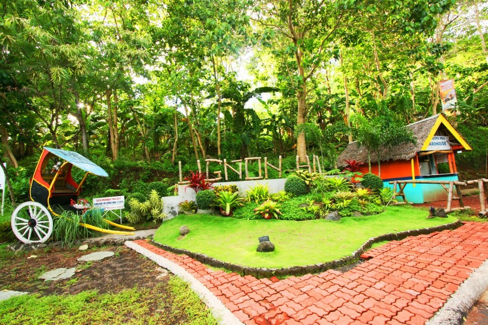
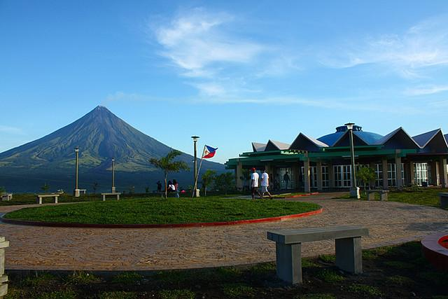

ABOUT THE PARK
Lignon Hill Nature Park offers a panoramic view of Legazpi City and Mayon Volcano. Standing 156 meters high, it is a premier spot for sightseeing and outdoor activities. Visitors flock here to enjoy the fresh mountain air and the most spectacular sunset views in Bicol.

HISTORY & HERITAGE
During wartime, Lignon Hill was used as a strategic lookout point due to its commanding height. It has since been developed into a vibrant recreational park. Today, it stands as a symbol of Albay’s transformation into a top-tier adventure tourism destination.
FACTS
Key details for your mountain visit.
- Elevation: 156 Meters High
- Location: Legazpi City, Albay
- Feature: 360° Viewing Deck
- Difficulty: Easy Hiking Trail
TRAVEL TIPS
Plan for a safe and scenic adventure.
- 👟 Footwear: Wear comfortable athletic shoes.
- 💧 Hydration: Bring water for the steep walk.
- 🌅 Timing: Visit at sunrise or late afternoon.
- 📸 Camera: Essential for the Mayon backdrop.
THINGS TO DO
Adrenaline and relaxation combined.
Zipline Ride
Hiking
Sky Biking
Sightseeing
Night Viewing
Try the Sky Bike for a thrilling experience with a direct view of Mayon!